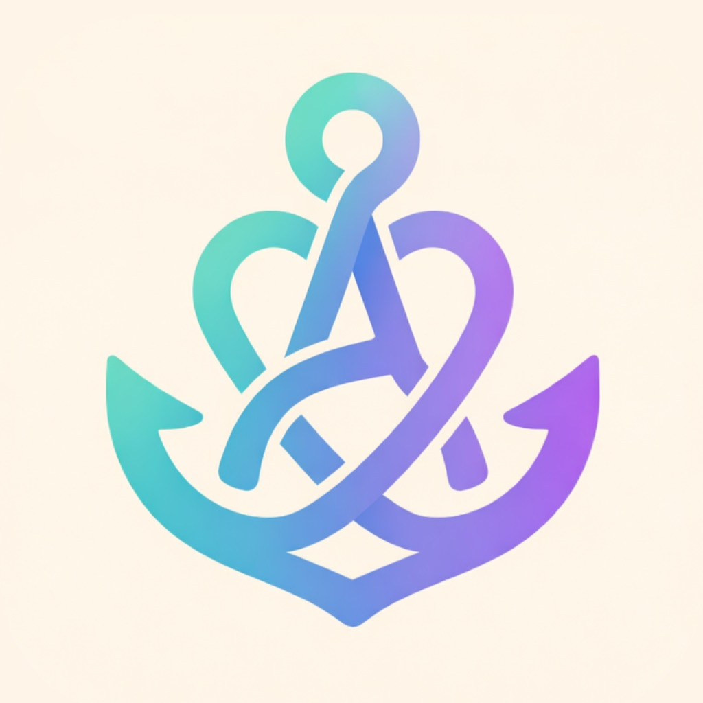

思想を、売れる順序へ落とす。
Balance of Life、Enso、Still Fox、365 Zen Momentsを軸に、 ブランド哲学、商品戦略、広告、SNS、Shopify改善をObsidianで整理。
AI Product / UX / Web Operations
中邨 隆之介。向かう先を決めてから動くことにこだわりながら、 AIを使ってブランド設計、アプリ企画、EC改善、ドキュメント整備まで手を動かしてきました。
Life is a journey of research, challenge, and direction.
Balance of Life、Enso、Still Fox、365 Zen Momentsを軸に、 ブランド哲学、商品戦略、広告、SNS、Shopify改善をObsidianで整理。

Anchor Product SpecPanic時の認知負荷を前提に、Shield、Offline-first QR、Shortcuts、 高コントラストUIを設計したSwiftUIアプリ。
Philosophy
学びも、制作も、事業も、結局は観察と仮説の繰り返しだと思っています。 AIはその速度を上げてくれますが、何を作るかの方向性は自分で決めないと意味がない。
最初から答えを持っているよりも、動かしながら修正していく方が自分には合っています。
情報工学を学びながら、AIやWeb、プロダクト設計を実際の制作に結びつける。
PODブランド、Shopify改善、SNS運用、iOSアプリ企画を自分で動かして検証する。
考えたこと、失敗したこと、判断した理由をMarkdownや資料として残し、次の改善につなげる。
努力の量だけで勝負せず、向かう先を観察し、仮説を立て、進む順番を設計する。
Selected Work
どのプロジェクトも、思いつきで始めたものはありません。 思想から始めて、仮説を立て、実装・運用まで一本の流れで設計しています。
Method
「デザインが悪い」で止めず、何が不安を生んでいるか、どこで価値が伝わっていないかを分解します。
顧客、採用担当者、PM、UXの視点で仮説を出し、反証可能性や検証方法まで確認します。
LP、PDP、広告コピー、FAQ、仕様書、SwiftUI構成など、必要な人が迷わず使える状態まで整えます。
AIの出力はそのまま使わず、事実性、ユーザー視点、ブランドとの整合性、実運用で使えるかを確認してから反映します。
Capabilities
Contact